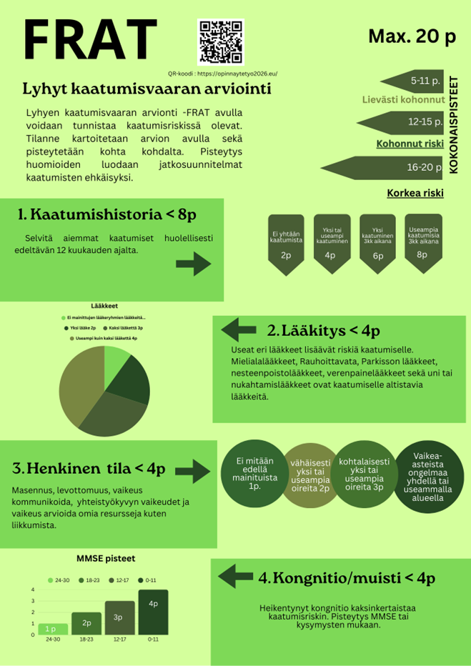

Opinnäytetyön lisätiedot ja lähteet
Tämä sivusto on osa opinnäytetyötä, eikä se ole Terveyden ja hyvinvoinnin laitoksen, Peninsula Healthin tai muiden viitattujen tahojen virallinen palvelu. Sisältö on tarkoitettu vain yleiseksi tiedoksi, eikä se korvaa ammattilaisen antamaa lääketieteellistä neuvontaa. Tämä verkkosivu käsittelee iäkkäiden kaatumisen ehkäisyä. Sisältöä ei tule käsittää lääketieteelliseksi neuvonnaksi, diagnosoinniksi tai hoidoksi. Terveyttä tai lääkitystä koskevissa asioissa on aina otettava yhteys terveydenhuollon ammattilaiseen.
Sivuston sisältämät tiedot ja FRAT-työkaluun perustuvat tiedot on tarkoitettu ainoastaan osaksi opinnäytetyötä.
Lyhyt kaatumisvaaran arviointi – FRAT (pdf 99 kt) on saatavilla täällä: Terveyden ja hyvinvoinnin laitos.
Sisällöllinen riskiarviointi perustuu FRAT (Falls Risk Assessment Tool) -työkaluun, jonka on kehittänyt: Peninsula Health Alkuperäisen työkalun omistus- ja käännösoikeudet kuuluvat kyseisille tahoille.Siirry osioon:
- Asuminen ja kaatumishistoria
- Lääkitys
- Henkinen tila
- Kognitio/muisti
- FRAT-mittarin käytön ohjeistus
- Lähteet
- Tietoa sivusta
Asuminen ja kaatumishistoria
Kaatumishistorian vaikutus FRAT-mittariston kokonaispisteisiin on pistemäärällisesti suuri. Kaatumisten ehkäisyn maailmanlaajuiset suositukset julkaistiin vuonna 2022. Suosituksen mukaan, mikäli henkilö on hakeutunut hoitoon kaatumisen vuoksi ja hänellä on yli kaksi kaatumista vuoden sisällä, kuuluu hän korkean riskin kaatumisen ryhmään. Tässä tilanteessa uuden kaatumisen todennäköisyyden arvioitiin olevan jopa 70 % (Montero-Odasso ym., 2022) FRAT- mittarissa arvioidaan kaatumisten määrää viimeisen 12 kuukauden aikana. Mikäli henkilö ei ole kaatunut tänä aikana, saa hän 2 pistettä. Yhdestä tai useammasta kaatumisesta 12 kuukauden aikana henkilö saa 4 pistettä. Yhdestä kaatumisesta viimeisen 3 kuukauden aikana henkilö saa 6 pistettä ja useammista kaatumisista 3 kuukauden aikana henkilö saa 8 pistettä (THL, n.d).
Ammattilaisen tulee aina kysyä iäkkäältä, onko hän kaatunut viimeisen 12 kuukauden aikana. Mikäli iäkästä tavataan useammin, tulee häneltä kysyä, onko hän kaatunut edellisen tapaamisen jälkeen. Haastetta lisää se, ettei iäkäs aina muista kaatumistaan. Mitä nopeammin kaatumisesta kysytään, sitä varmemmin kaatuminen on vielä muistissa ja sitä paremmin iäkäs muistaa syyt miksi hän kaatui. Joskus voi olla kyse siitä, ettei iäkäs halua omatoimisesti kertoa kaatumisestaan. (Pajala, 2012. ss.10, 17) Aiempi kaatuminen nostaa iäkkään kaatumisriskiä sillä kerran kaatuneista iäkkäistä noin puolet kaatuu uudelleen. Toistuvaa kaatuilua esiintyy noin 15 % iäkkäistä. (Pajala, 2012. ss.10, 17)
Lääkitys
Orientoitumiseen aikaan ja paikkaan vaikuttavat, sekä tehokkaasti verenpainetta alentavat lääkkeet lisäävät kaatumisriskiä. Kaatumisvaara pysyy koholla muutamia vuorokausia uuden lääkehoidon aloituksesta. Huimaava kokemus saattaa johtua lääkkeistä, mutta myös ravitsemuksen tai nesteytyksen puutteesta. Lääkevasteen seuranta on tärkeää kaatumisten ehkäisemiseksi. Potilaat, jotka ovat yli 75-vuotiaita, tai omaavat kaatumis- että huimaustaipumuksen, tajunnan menetyksiä, mutta myös autonomista hermostoa heikentävä sairaus, kuten diabetes tai Parkinsonin tauti, suositellaan ortostaattista koetta. (Ojala & Pesonen, 2025, s. 2)
Ortostaattisella hypotensiolla tarkoitetaan pystyyn nousuun liittyvää verenpaineen laskua, joka johtuu autonomisen hermoston säätelyhäiriöstä (Kantola ym, 2018, s. 1881). Ortostaattisessa kokeessa mitataan verenpaine sykkeen kanssa, kun potilas on maannut 5 minuutta. Tämän jälkeen hän nousee nopeasti seisomaan ja minuutin kuluttua tehdään toinen mittaus, sekä 3 minuutin kohdalla pystyyn noususta viimeinen mittaus. Lisäksi tarkkaillaan, ilmenikö huimausta tai esimerkiksi horjahtelua, tai vastaavia oireita. Moni lääke vaikeuttaa tai aiheuttaa ortostaattista hypotensiota. (Terveysportti.fi, n.d.) Antikolinergisia haittoja on suun kuivuminen, näköhäiriöt, ummetus ja virtsaamisvaikeudet (Penttilä ym., 2005). Lisäksi antikolinergisia vaikutuksia ovat: sydämen tiheälyöntisyys, hikoilun esto, muistin heikentymä, sekä orientaation lasku (Ojala & Pesonen, 2025, s. 2). Sedaatiolla tarkoitetaan rauhoittavaa, rentouttavaa tai väsyttävää vaikutusta (Terveyskylä, 2024). Eri lääkeryhmittäin olevia kaatumiselle altistavia lääkkeitä on lukuisia.
Parkinsonin taudin lääkkeistä erityisesti kaatumiselle altistaa biperideeni, prosyklidiini ja triheksifenidyyli, lisäksi näillä kaikilla oli myös huimaus-, ortostatismi- ja antikolinergisyysvaikutus. Näillä Parkinsonin taudin lääkkeillä on sedaatio-, huimaus-, ja ortostatismivaikutus (dopaminergiset ja MAO-B-estäjät): Amantadiini (myös antikolinerginen vaikutus) tapomorfiini, entakaponi, kabergoliini, levodopa, opikaponi, pramipeksoli, rasagiliini, ropiniroli, rotigotiini, safinamidi ja selegiliini. (Ojala & Pesonen, 2025, s. 2) Seuraavilla virtsankarkailulääkkeillä on antikoliergisiä- ja huimausvaikutuksia: darifenasiini, fesoterodiini, oksibutyniini, solifenasiini, tolterodiini (myös sedaatiovaikutus) ja trospium. Nämä ovat myös erityisesti kaatumiselle altistavia lääkkeitä. (Ojala & Pesonen, 2025, s. 2) Nämä lihasrelaksantteihin kuuluvat sedatiiviset ja antikoliergiset lääkkeet altistavat erityisesti kaatumiselle: baklofeeni, dantroleeni, orfenadriini ja titsanidiini (tällä on myös ortostatismivaikutus) (Ojala & Pesonen, 2025, s. 2).
Kipulääkkeet, jotka altistavat erityisesti kaatumiselle, sekä sisältävät ortostaattisia-, sedaatio- ja antikolinergisiä vaikutuksia ovat (opioidit): buprenorfiini, fentanyyli, hydromorfoni, kodeiini, metadoni, morfiini, oksikodoni, petidiini ja tramadoli. Nämä muut kipulääkkeet altistavat sedaatiolle ja huimaukselle: gabapentiini ja pregabaliini. (Ojala & Pesonen, 2025, s. 2)
Pahoinvointilääkkeet, jotka altistavat erityisesti kaatumiselle ja sisältävät sedatiivisia ja antikolinergisiä vaikutuksia, ovat: meklotsiini, proklooriperatsiini, skopolamiini, syklitsiini, metoklopramidi ja promatsiini, joka sisältää myös ortostatismivaikutuksen (Ojala & Pesonen, 2025, s. 2).
Eturauhasen hyvälaatuisen liikakasvun lääkkeet, jotka altistavat erityisesti kaatumiselle ja ovat lisäksi huimaavia ja ortostatismia lisääviä, ovat: alfutsosiini, pratsosiini (joka myös sedatoi), silodosiini ja tamsulosiini (Ojala & Pesonen, 2025, s. 2). Sydän - ja verisuonisairauksien lääkkeet, jotka lisäävät ortostatismia (ACE:n estäjät ja niiden yhdistelmät): enalapriili, kaptopriili, kinapriili, lisinopriili, perindopriili, ramipriili. ATR-salpaajat ja niiden yhdistelmät: eprosartaani, irbesartaani, kandesartaani, losartaani, olmesartaani, telmisartaani, valsartaani. Beetasalpaajat: asebutololi, atenololi, bisoprololi, metoprololi, nebivololi, pindololi, propranololi, seliprololi, sotaloli. Kalsiumkanavan salpaajat: amlodopiini, diltiatseemi, felodopiini, isradipiini, lerkanidipiini, nifedipiini, nilvadipiini, nimodipiini, verapamiili.
Diureetit: amiloridi, bumetanibi, finerononi, furosemidi, eplerenoni, hydroklooritiatsidi, indapamidi, metolatsoni ja spirinolaktoni. Nämä muut verenpainelääkeet altistavat erityisesti kaatumiselle ja ovat lisäksi sedatiivisia, sekä ortostatismia aiheuttavia: doksatsosiini, klonidiini, moksonidiini ja pratsosiini. Nitraatit, jotka myös erityisesti altistavat kaatumiselle, huimaukselle ja ortostatismille, ovat: glyseryylitrinitraatti, isosorbidinitraatti ja isosorbidimononitraatti. Myös rythmihäiriölääkkeet, jotka aiheuttavat ortostatismia ovat: flekainidi (lisäksi sedaatiovaikutus) ja propafenoni, jossa on kaatumis- ja huimausvaikutus. (Ojala & Pesonen, 2025, s. 2)
Trisykliset masennuslääkkeet altistavat erityisesti kaatumiselle ja niissä on myös sedatiivisia, huimaavia, ortostaattisia ja antikolnergisia vaikutuksia. Ikääntyneillä ne saattavat aiheuttaa sekavuutta ja muistihäiriöitä. Ne ovat: amitriptyliini, doksepiini, klomipramiini, nortriptyliini ja trimipramiini. (Ojala & Pesonen, 2025, s. 1)
Psykoosilääkkeet altistavat erityisesti kaatumiselle, lisäksi nämä lääkkeet aiheuttavat sedaatiota ja ortostatismia: aripipratsoli, asenapiini, flupentiksoli, haloperidoli, klotsapiini, paliperidoni, perisiatsiini, proklooriperatsiini, risperidoni, sertindoli, sulpiridi, tsiprasidoni, tsuklopentiksoli ja litium. Edeltävien vaikutusten lisäksi antikolinergisiä ovat: ketiapiini, klooriprotikseeni, klooripromatsiini, levomepromatsiini, melproni, olantsapiini, perfenatsiini, pimotsidi, promatsiini, tioridatsiini, trifluoroperatsiini ja trimipramiini. (Ojala & Pesonen, 2025, s. 1)
Muut masennuslääkeet, joissa on kaatumis- ja sedaatiovaikutus: agomelatiini, bupropioni, duloksetiini, mianseriini, mirtatsapiini, tratsodoni, venlafaksiini ja vortioksetiini (Ojala & Pesonen, 2025, s. 1). Lisäksi on selektiivinen MAO:n estäjä, joka altistaa kaatumiselle ja huimaukselle: moklobemidi (Ojala & Pesonen, 2025, s. 1).
Bentsodiatsepiinit ja niiden johdokset, jotka erityisesti altistavat kaatumiselle ja ovat lisäksi sedaativisia ja huimausta aiheuttavia, ovat: alpratsolaami, diatsepaami, klobatsaami, klonatsepaami (on myös antikolierginen), klooridiatsepoksidi, loratsepaami, oksatsepaami, midatsolaami, nitratsepaami, tematsepaami, triatsolaami, tsopikloni ja tsolpideemi (Ojala & Pesonen, 2025, s. 1).
Epilepsialääkkeet, joissa on kaatumis-, sedaatio- ja huimausvaikutus: brivarasetaami, eslikarbamatsepiini, etosuksimidi, felbamaatti, fenytoiini, fosfenytoiini, gabapentiini, karbamatsepiini (joka on myös antikolinerginen), lakosamidi, lamotrigiini, levetirasetaami, okskarbatsepiini, perampaneeli, pregabaliini, primidoni, rufinamidi, tiagabiini, topiramaatti (joka on myös antikolinerginen), tsonisamidi, valproiinihappo ja vigabatriini (Ojala & Pesonen, 2025, s. 1).
Selektiiviset serotoniinin takaisinoton estäjät (SSRI), jotka lisäävät kaatumisriskiä: essitalopraami, fluoksetiini, fluvoksamiini, paroksetiini (joka on myös antikolinerginen), sertraliini ja sitalopraami (Ojala & Pesonen, 2025, s. 1).
Antihistamiinit altistavat erityisesti kaatumiselle ja ovat lisäksi sedatiivisa, huimaavia ja ortostatismia lisääviä. Ne ovat: hydroksitsiini, doksylamiini (joka on myös antikolinerginen) ja prometatsiini. (Ojala & Pesonen, 2025, s. 1)
Henkinen tila
Tekstiä...
Kognitio/muisti
Tekstiä...
FRAT-mittarin käytön ohjeistus
Tekstiä...

Klikkaa kuvaa nähdäksesi sen suurempana
Lähteet (myöhemmin lisätään):
Lähdeteksti https://opinnaytetyo2026.eu
Takaisin ylös